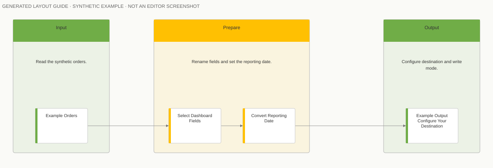
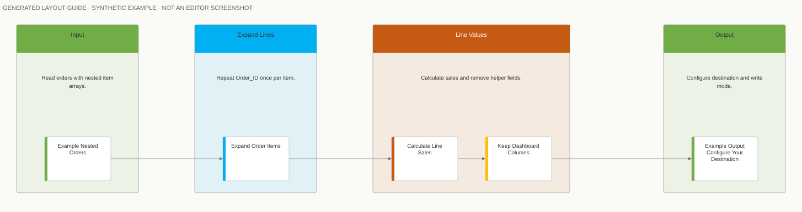
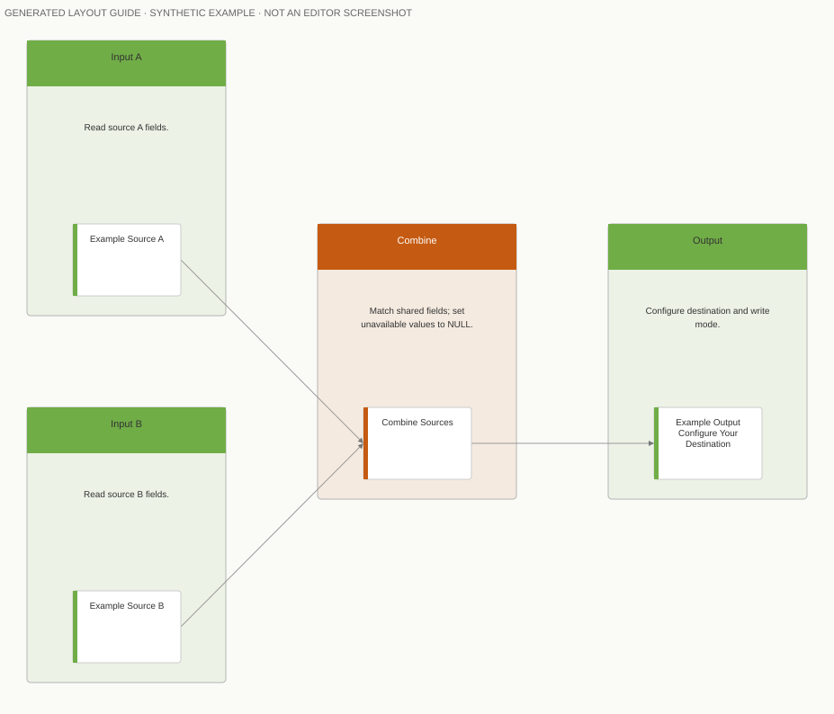
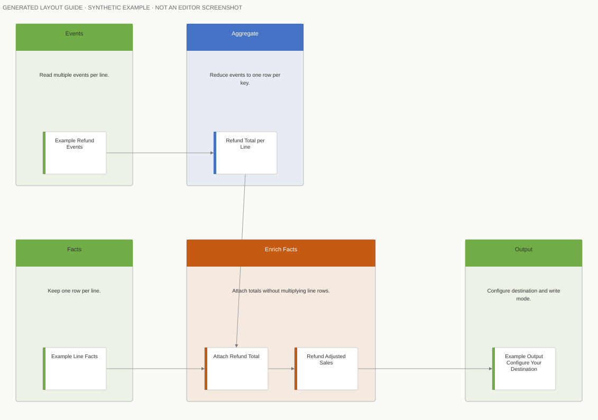
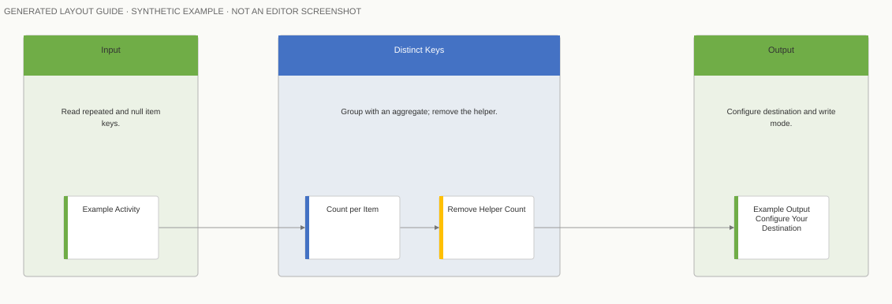
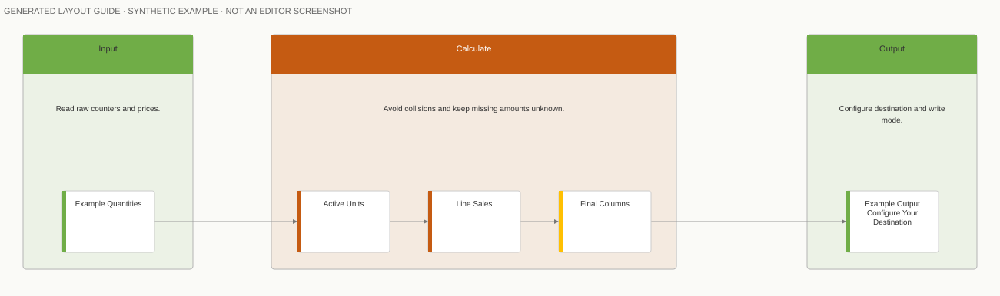
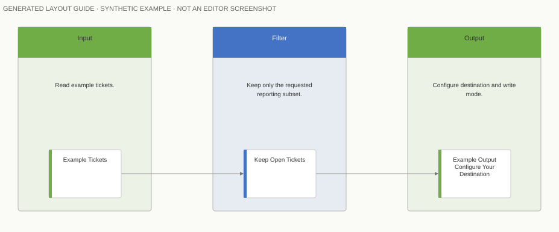
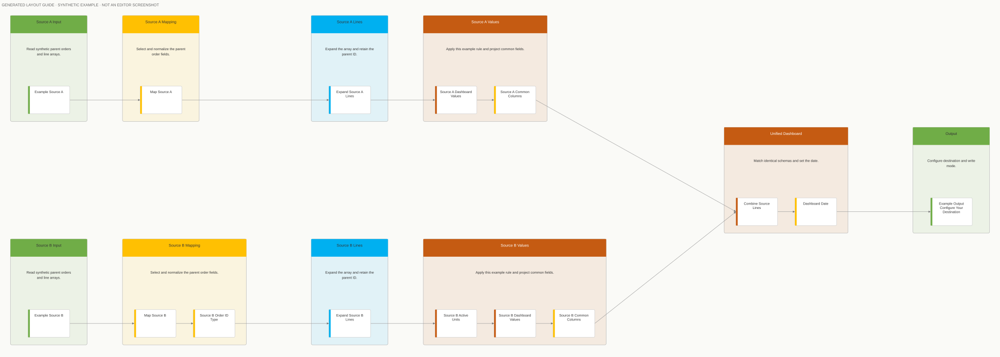

Synthetic examples · intended layout only · not ClicData screenshots · click to open full size
Start here for flat input tables and simple output mapping.

Use when expanding an array while retaining parent context.

Use for unions, matching columns and explicit missing-source NULLs.

Use to prevent event expansion from multiplying the final fact.

Use this instead of Group Rows with empty GroupedValues.

Use distinct raw names and sequential nodes for dependent formulas.

Use for a supported Filter Query expression and clear row filtering.

Use for a complete nested-array-to-common-schema pipeline with two sources.
